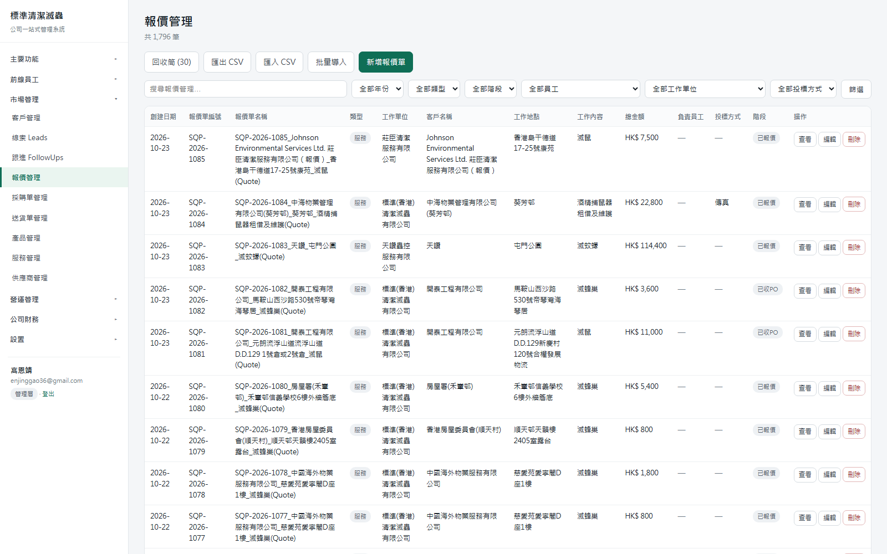
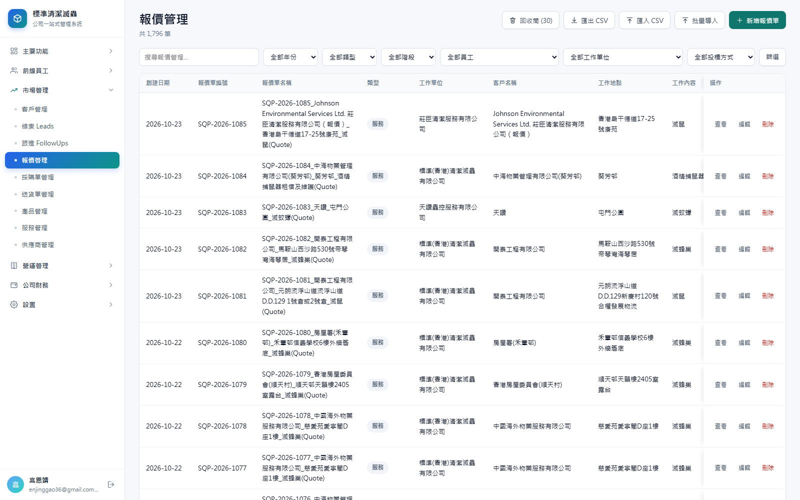
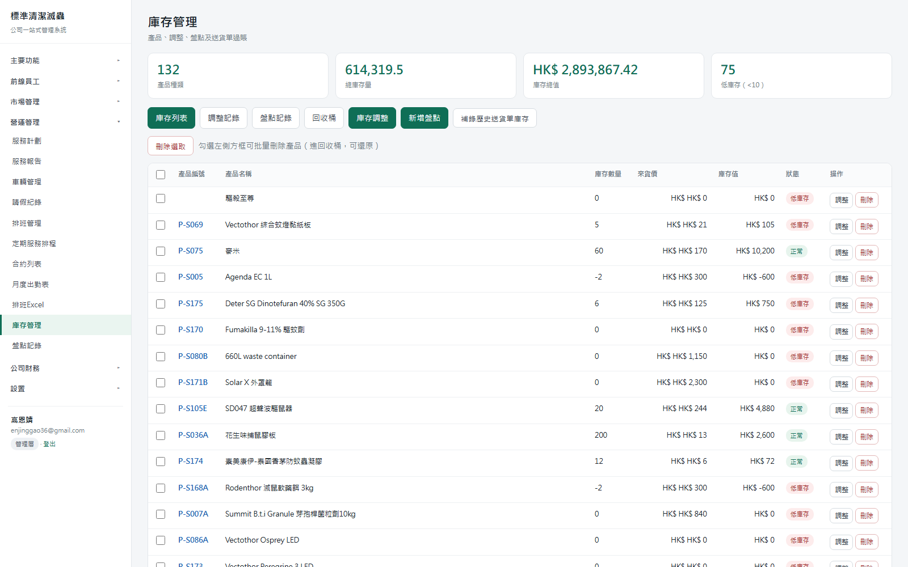
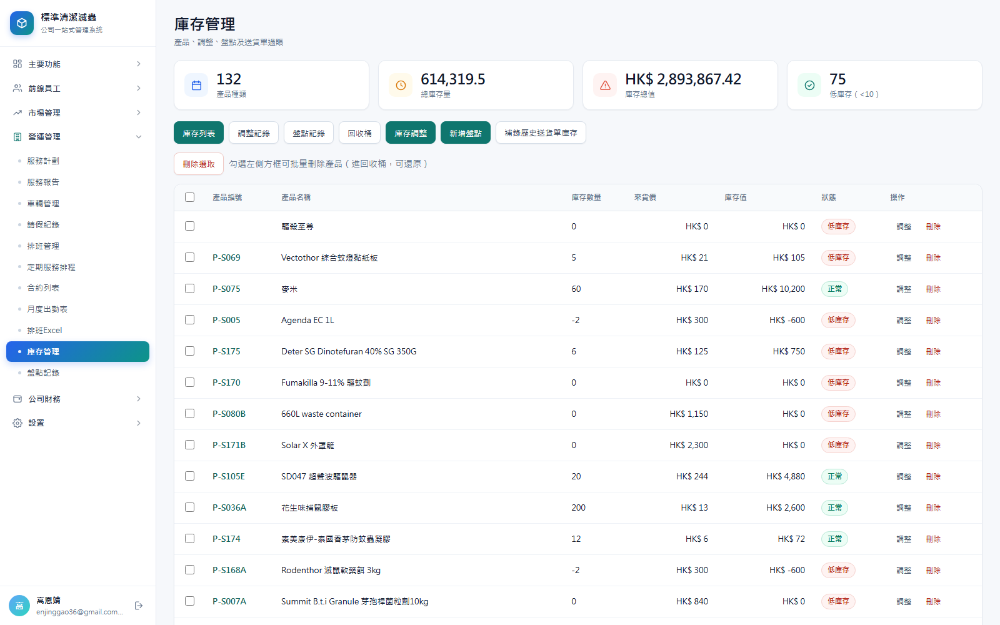
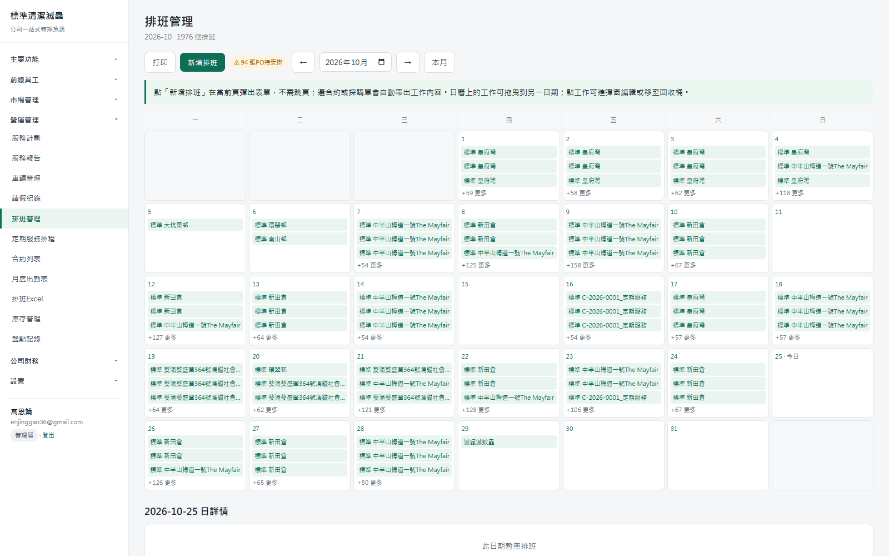
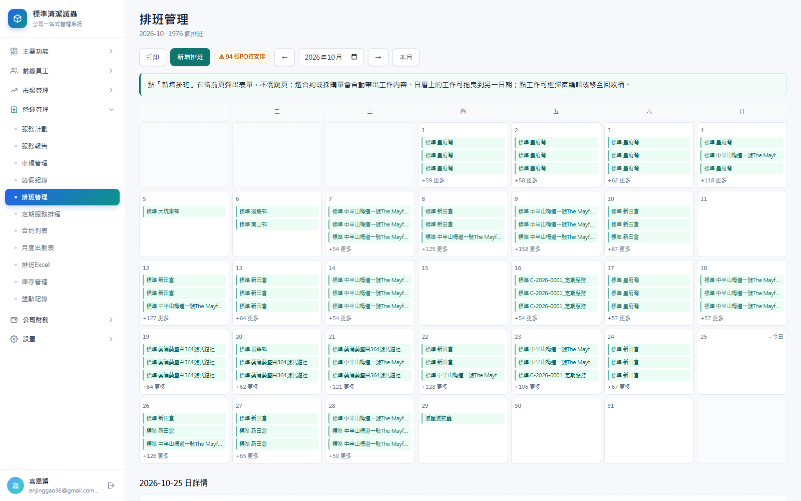

UI 系統性改造交接文件
以原系統（standardcpc.base44.app）的視覺語言與原始碼為基線，對復刻系統做一次完整的介面重構：重建設計令牌、側欄與頁首骨架、表格與表單組件，並修掉審查中發現的三個真實渲染缺陷。業務規則與權限一律未動（僅修正新增表單的提交欄位與錯誤處理）。
0摘要
一句話總結：把「能用的復刻系統」升級成「看起來像一套產品」——側欄有品牌與圖示、頁首操作靠右、KPI 有語義圖示、密集表格不再把編號與日期擠成兩行、操作列在橫向捲動時始終可見、表單控件字體與高度統一。
| 層面 | 改造前 | 改造後 |
|---|---|---|
| 品牌識別 | 純文字「標準清潔滅蟲」 | 藍→綠漸層 Logo 方塊 + 名稱/副標雙行 |
| 側欄導航 | ▸/▾ 文字箭頭、無圖示、選中為淺色左邊框 | 6 個分組圖示 + 旋轉 SVG 箭頭 + 漸層膠囊選中態 + 底部頭像卡 |
| 頁首 | 標題 22px，操作按鈕在標題下方左對齊 | 標題 25px，操作自動提升到標題同列右對齊 |
| KPI | 數字與標籤同欄、無圖示、全部墨綠 | 38px 粉彩圖示磁貼 + 23px 數字 + 藍/琥珀/玫瑰/翡翠語義色 |
| 密集表格 | 編號與日期折成 2 行，行高 70–95px | 關鍵欄 nowrap + 列寬下限，行高降到 40–66px |
| 操作列 | 橫向溢出時被推出畫面 | position:sticky 吸附右緣，任何捲動位置都可點 |
| 行內按鈕 | 3 個描邊小按鈕，每列重複 | 去邊框文字型，僅 hover 上色，視覺重量降一級 |
| 表單控件 | 字體回落 Arial、高 31px | 繼承 CJK 字體、高 36px、聚焦 3px 光環 |
1審查方法與依據
不使用「憑印象改版面」的做法。整個審查是四路並行取證，任何一條改動都能回指到具體證據。
| 來源 | 取得方式 | 用途 |
|---|---|---|
| 原系統線上站 | https://standardcpc.base44.app 首頁與 /assets/index-*.css（100,567 bytes） | 確認主題令牌（shadcn 變數）、字體堆疊 |
| 原系統前端原始碼 | 05. 源碼分析/frontend/beautified/app.js（1.17 MB）+ chunks/*.js，以 Prettier 美化後逐段閱讀 | 側欄、卡片、表格、按鈕的實際 Tailwind 類名與結構 |
| 原系統 34 張截圖 | 03 Standard CPC DataBase/01. 截圖/（1241px 寬） | 視覺基準：間距、密度、圖示風格、色彩語義 |
| 復刻系統實機 | 本機 3000 埠，Headless Chrome 1600×1000，逐頁 Page.captureScreenshot + getComputedStyle 取值 | 44 頁 × 前後兩輪，形成可量化對照 |
1.1 從原系統原始碼抽出的關鍵事實
// app.js @32056 — 側欄品牌區 className: "w-10 h-10 bg-gradient-to-br from-blue-600 to-teal-600 rounded-xl shadow-lg shadow-blue-500/20" // app.js @32101 — 選中選單（漸層膠囊） n.pathname === B.url ? "bg-gradient-to-r from-blue-600 to-teal-600 text-white shadow-lg shadow-blue-500/20" : "hover:bg-blue-50 hover:text-blue-700 rounded-xl" // index-Stf6taEd.css — 主題令牌 --background: 0 0% 100%; --foreground: 0 0% 3.9%; --muted-foreground: 0 0% 45.1%; --border: 0 0% 89.8%; --radius: .5rem; --sidebar-background: 0 0% 98%; // chunks/Contracts-*.js @470 — 表格欄頭 className: "text-3xl font-bold text-slate-900" // 頁標題 30px/700 className: "bg-slate-50" // 表頭底色
1.2 這些事實推導出的設計語言
色彩
中性近黑文字 + 白底，品牌只用一組「藍→青綠」漸層（Logo、選中態），功能色（綠/藍/琥珀/玫瑰）留給狀態與 KPI 圖示。
形狀
卡片 12px 圓角 + 1px 淡邊 + 極輕陰影；導航項與按鈕 8px；標籤為全圓角膠囊。不用粗邊框與重陰影。
圖示
Lucide 線性圖示，16px、1.8px 描邊、圓端點；只在「分組標題 / KPI / 工具列按鈕 / 卡片標題」出現，行內不濫用。
2原系統設計語言 vs 復刻系統（改造前）
下表是實測數值，不是估算。getComputedStyle 取自 /contracts 頁面同一組選擇器。
| 令牌 | 原系統 | 復刻（改造前） | 判定 |
|---|---|---|---|
| 頁標題 h1 | 30px / 700 / #0f172a | 22px / 700 / #182027 | 偏小 |
| 表頭 th | 14px / 500 / muted / bg-slate-50 | 11.7px / 600 / #66717b / #fafbfc | 偏小 |
| 表格 td | 14px / padding 16px | 12.7px / padding 9×10px | 偏擠 |
| 卡片 | 12px 圓角 + shadow | 10px 圓角 + 0 1px 1px 3% | 偏平 |
| 按鈕 | h-9 (36px) / text-sm / rounded-md | h≈38px / 14px / 7px | 不統一 |
| 輸入框 | inherit 字體、h-9 | Arial、h=31px | 字體脫節 |
| 品牌色 | 藍→青綠漸層 | 單一墨綠 #0f6e56 | 風格差異 |
| 側欄 | #fafafa + 圖示 + 漸層選中 | #fff + 純文字 + 左邊框選中 | 無識別 |
3現狀問題清單
共 16 項，按「令牌 → 骨架 → 組件 → 缺陷」四層排列。每項都標了處理狀態。
3.1 設計令牌層
| # | 問題 | 證據 | 處理 |
|---|---|---|---|
| 1 | 全站只有 5 個 CSS 變數，狀態色散落在各處硬編碼 | :root 僅 --brand/--line/--ink/--muted | 已改 重建 24 個令牌 |
| 2 | 字號階梯斷層：正文 14、表格 12.7、表頭 11.7、標籤 11 | computed styles | 已改 13 / 13 / 11.5 / 11.5 |
| 3 | 輸入框字體回落 Arial，與正文微軟正黑不一致 | input computed font-family: Arial | 已修 見 §3.4-① |
| 4 | 圓角三套（10 / 7 / 6）且無規律 | card 10px、btn 7px、pill 10px | 已改 12 / 8 / 999 |
3.2 骨架與導航層
| # | 問題 | 證據 | 處理 |
|---|---|---|---|
| 5 | 側欄只有文字，沒有品牌區、沒有分組圖示、沒有頭像 | 改造前截圖 01_我的工作_前.png | 已改 Logo 方塊 + 6 圖示 + 頭像卡 |
| 6 | 分組箭頭用 ::after content:'▸' 字元，字型不同會位移 | .navgrp:not([open])>summary::after | 已改 SVG mask 箭頭 + rotate |
| 7 | 選中態為「淺綠底 + 3px 左邊框」，與 hover 差異小 | a.on{background:#eaf5f0} | 已改 漸層膠囊 + 陰影 |
| 8 | 頁首操作按鈕在標題下方左對齊，與原系統右上角相反 | 改造前所有列表頁 | 已改 自動提升到標題同列 |
| 9 | 登入頁卡片內容溢出、示範帳號按鈕換行、無品牌區 | 00_登入_前.png（備註文字被卡片下緣切掉） | 已改 重新設計 |
3.3 組件層
| # | 問題 | 證據 | 處理 |
|---|---|---|---|
| 10 | KPI 卡：數字與標籤上下擠、無圖示、四張全墨綠 | 改造前 02_mywork | 已改 圖示磁貼 + 語義色 |
| 11 | 表格編號/日期欄被擠成 2 行（例：SQP-2026- / 1085） | 03_報價管理_前.png 第 2、6 欄 | 已改 nowrap + 列寬下限 |
| 12 | 橫向溢出時操作列被推出畫面，必須先捲動才能點 | 12 欄以上的報價/採購頁 | 已改 sticky 吸附右緣 |
| 13 | 每列 3 個描邊小按鈕（查看/編輯/刪除），密集頁達 270 個 | /purchaseorders 有 273 個 .btn | 已改 去邊框文字型 |
| 14 | 金額欄未右對齊，HK$ 0 與 HK$ 47,200 起點不一 | 02_合約列表_前.png | 已改 依型別自動 .num |
| 15 | 空狀態只有一行灰字，無圖形，與「載入失敗」難分 | 全部空表 | 已改 托盤圖示 + 虛框 |
| 16 | 表單底部「儲存/取消」浮在卡片外，與表單脫節 | 05_新增客戶_前 | 已改 卡片內吸底操作條 |
3.4 審查中發現的三個真實缺陷
這三個不是「風格問題」，是會讓使用者困惑或誤判的實際錯誤，已一併修掉。
input 沒有繼承 font-family，Chrome 預設用 Arial。結果是同一張表單裡「客戶名稱」（微軟正黑）與輸入框裡打出來的字（Arial）長得不一樣，中英文混排時字重與字寬都會跳。修法：
input,select,textarea{font-family:inherit}。實測 /new/customers 輸入框字體由 Arial → "Microsoft JhengHei"。
HK$ HK$ 0
server.mjs 寫成 `HK$ ${money(...)}`，而 money() 本身已回傳含幣種符號的字串。修法：移除多餘前綴，統一走
money()。
.empty::before 產生圖示，但日曆空白格是 <div class="calendar-cell empty">，於是 7×5 的日曆裡每個空白格都長出一個托盤圖示，且被 padding:46px!important 撐高。修法：日曆格改為
calendar-cell is-empty，圖示選擇器收窄到 td.empty 與 .card.empty。
4改造內容
4.1 設計令牌（lib/ui.mjs · :root）
:root{
--brand:#0f766e; --brand-2:#0b5f58; --brand-50:#ecfdf5;
--grad:linear-gradient(135deg,#2563eb 0%,#0d9488 100%);
--ink:#0f172a; --ink-2:#334155; --muted:#64748b;
--line:#e4e9f0; --line-2:#eef2f7; --bg:#f6f8fb;
--danger:#b42318; --warn:#b54708; --info:#1d4ed8;
--r:12px; --r-sm:8px; --r-xs:6px;
--sh-sm:0 1px 2px rgba(16,24,40,.05);
--sh:0 1px 3px rgba(16,24,40,.06), 0 1px 2px rgba(16,24,40,.04);
--side:250px;
}
對照改造前的 5 個變數，現在狀態色、陰影、圓角、側欄寬度都收進令牌，後續要換主題只需改這一塊。
4.2 側欄（品牌 + 分組圖示 + 漸層選中 + 頭像卡）
<aside>
<div class="brand">
<div class="brand-logo"> <!-- icon('box') --> </div>
<div><b>標準清潔滅蟲</b><span>公司一站式管理系統</span></div>
</div>
<div class="navscroll">
<details class="navgrp">
<summary> <!-- 分組圖示 --> <b>市場管理</b> </summary>
<nav><a class="on">客戶管理</a>…</nav>
</details>
</div>
<div class="who"><div class="who-avatar">高</div>…<a href="/logout"></a></div>
</aside>
- 分組圖示對照表
NAV_ICONS：主要功能→dashboard、前線員工→users、市場管理→trend、營運管理→building、公司財務→wallet、設置→settings。 - 選中態
aside nav a.on{background:var(--grad);box-shadow:0 4px 12px rgba(37,99,235,.24)}，未選中為灰點 + hover 淺底。 - 底部
.who用flex固定在視窗底，.navscroll獨立捲動——長選單不會把使用者資訊推走。
4.3 頁首：把「操作」提升到標題同列
系統有 20+ 個列表頁，格式都是 <h1> + <div class="sub"> + <div class="bar">。逐一改寫風險太高，因此加了一個受控的字串轉換：
function splitHead(body) {
// 1. 取出 breadcrumbs / h1 / .sub
// 2. 若緊接著的 .bar 內不含 input/select/textarea/form/table/dialog/details
// → 視為「純按鈕列」，提升為頁首右側操作區
// 3. 否則原樣保留（篩選列留在標題下方）
return { head: `<div class="pagehead">…</div>`, rest };
}
安全邊界：只處理「頁面開頭」的那一組，且一旦偵測到表單控件就放棄提升——所以 /quotations、/trash 這種帶搜尋框的頁面，篩選列仍留在原位，只有匯出/新增等按鈕上移。
4.4 按鈕與圖示自動注入
const ACTION_ICON_RULES = [ [/^(新增|建立|創建|開立)/, 'plus'], [/^匯出/, 'download'], [/^(匯入|導入|批量導入)/, 'upload'], [/^篩選/, 'filter'], [/^合併/, 'merge'], [/^回收/, 'trash'], ];
20 多個頁面的按鈕文字不用改，decorateActions() 會依關鍵字補上 16px 線性圖示。實測效果：回收筒 (30) 前綴垃圾桶、匯出 CSV 前綴下載箭頭、新增合約 前綴加號。
4.5 表格：三件事同時解決密度、可讀性與可操作性
| 機制 | 做法 | 效果 |
|---|---|---|
| 關鍵欄 nowrap | NOWRAP_RE 比對欄位 key（number/no/id/code/date/amount/total/price/plate/type…），命中則加 td.nw | SQP-2026-1085、2026-10-23 不再折行 |
| 列寬下限 | colMin()：編號類 104px、名稱/地址類 210px、單位/地點類 148px、其餘 100px，寫進 th style="min-width" | 密集表不再把 12 欄硬塞進 1300px，改為容器橫向捲動 |
| 操作列吸附 | th.act-col, td.actions.act-col{position:sticky;right:0} + 左側漸層陰影 | 報價頁 12 欄時，捲到任何位置都能直接點「查看/編輯/刪除」 |
| 金額右對齊 | isNum()：type==='money' 或欄位在 AMOUNT_FIELDS 內即套 .num | 數字小數點對齊，掃視總額變快 |
| 行內按鈕降噪 | td.actions .btn.small{background:transparent;border-color:transparent}，僅 hover 上色 | 採購頁 273 個按鈕的視覺重量大幅下降 |
4.6 KPI 卡
export function kpis(items) {
const name = item.icon || KPI_DEFAULT_ICONS[i % 6]; // calendar/clock/alert/check…
const tone = item.tone ?? KPI_DEFAULT_TONES[i % 6]; // ''/amber/rose/emerald/violet
return `<div class="kpi">
<div class="kpi-ico ${tone}">${icon(name)}</div>
<div class="kpi-main"><b>${value}</b><span>${label}</span></div>
</div>`;
}
呼叫端完全不用改（kpis([{label,value}]) 仍可用），圖示與色調按索引自動輪替；需要指定時傳 icon/tone 即可。/receivables 原本手寫的 5 張 KPI 也改走這個函式，順帶修掉「數字與標籤擠在同一行」的舊樣式。
網格改用 repeat(auto-fit,minmax(205px,1fr))：3 張 KPI 的客戶詳情頁不再留一格空白。
4.7 表單與彈窗
- 控件高度統一 36px、圓角 8px、聚焦
box-shadow:0 0 0 3px rgba(15,118,110,.14)。 form.card > .bar變成卡片內吸底操作條（負邊距 + 上邊框 + 淺底），「儲存/取消」不再飄在卡片外。.frow input[type=checkbox|radio|color]個別覆寫寬度——修掉「顏色選擇器被拉成整條黑條」與「勾選框被拉滿整欄」。- 彈窗 header/footer
sticky，改為 14px 圓角與rgba(15,23,42,.55)遮罩。
4.8 登入頁重構
從「一張白卡 + 兩行字」改成：整頁垂直置中、頂部品牌方塊、404px 卡片、電郵/密碼 placeholder、全寬主按鈕、2×2 示範角色格、底部密碼提示。原本被裁切的「示範帳號密碼：demo1234」現在落在卡片內。
5前後對照
同一台機器、同一個 1600×1000 視窗、同一份資料庫。左右為「改造前 / 改造後」上下排列，可直接比對行高、欄寬與層級。


HK$ HK$ 0）



6驗收結果
全部在隔離副本（:3101 + 獨立 _verify.db）執行，跑完自動清理測試資料，不動正式庫。
| 套件 | 範圍 | 結果 | 產出 |
|---|---|---|---|
| verify-frontline.mjs | 第三次修改的 73 項前線員工功能 | 73 / 73 通過 | 驗收結果_三次修改.json |
| verify-operation-2.mjs | 第二次修改的 55 項營運管理功能 | 55 / 55 通過 | 驗收結果_營運回歸_55.json |
| 四角色頁面冒煙 | 44 頁 × 4 角色 = 176 次載入 | 176 / 176 無異常 | 驗收結果_UI.json |
6.1 冒煙測試檢查項
不只是「HTTP 200」，每一頁另外檢查：
- HTTP 狀態 < 500（含 302 權限跳轉視為正常）
- 渲染內容不含
>undefined<、undefined</、NaN< class="pagehead"在單頁內最多出現一次（避免頁首被重複包裹）<div>/</div>數量配平（避免模板拼接漏標籤）
四個角色分別登入：management / office / front / accounting — 涵蓋權限差異造成的不同側欄與不同按鈕組合。
/\.navgrp>summary\{[^}]*font-size:13px;font-weight:700/。第一次重跑時我把分組標題設成 600 字重，這條就紅了。由於「主欄目 13px 加粗」本身是第二輪的使用者決策，我選擇把字重回復成 700 讓它繼續成立，而不是改測試——測試是契約，樣式應該服從契約。
7檔案與回滾
7.1 改動檔案
| 檔案 | 行數 | 增 / 刪 | 改動內容 |
|---|---|---|---|
lib/ui.mjs | 649 → 1105 | +521 / −89 | 設計令牌、側欄骨架、頁首拆分、圖示庫、按鈕與表格渲染、KPI、登入頁、明細選擇器回填 |
lib/pages.mjs | 727 → 727 | +5 / −5 | 日曆空格類名 empty → is-empty（4 處）；應收台賬 KPI 改走 kpis() |
lib/core.mjs | 552 → 554 | +3 / −1 | 新增補給／請假彈窗的 __id 改為空值（存檔 404 的根因） |
lib/actions.mjs | 772 → 814 | +44 / −3 | saveEntity 對「不存在的 __id」加防禦式回退 |
lib/utils.mjs | 274 → 280 | +6 / −0 | 新增 isIntegerField()：數量類欄位的整數判定 |
lib/config.mjs | 817 → 817 | +3 / −3 | 補給記錄的「產品／工具」欄改以明細表渲染 |
server.mjs | 838 → 841 | +5 / −2 | 庫存頁重複幣種；錯誤重繪時清除失效的 __id |
沒有資料庫遷移、沒有新增依賴、沒有改動任何 route 或權限判斷。
7.2 回滾
改造前的完整快照留在：
F:\04 STANDARD CPC SYSTEM\04. 四期\系统代码\backup-ui-20261025-112240\ ├─ lib\ (10 個 .mjs) └─ server.mjs
回滾 = 把該目錄的 lib 與 server.mjs 覆蓋回 系统代码\，再重啟 启动系统.bat。因為沒有 schema 變更，data.db 不需要動。
7.3 上線步驟
- 關掉正在跑的
启动系统.bat視窗（或對 3000 埠的 node 程序按 Ctrl+C）。 - 雙擊
F:\04 STANDARD CPC SYSTEM\04. 四期\系统代码\启动系统.bat。 - 瀏覽器
http://127.0.0.1:3000，強制重新整理（Ctrl+F5）清掉舊 CSS。 - 用示範帳號任一角色登入，確認側欄、KPI、表格樣式已更新。
8已知限制與建議
8.1 這次刻意沒做的
| 項目 | 原因 | 建議 |
|---|---|---|
| 列表頁 KPI 橫條 | 原系統在報價/客戶頁頂部有 6 張統計卡，需要對全量資料做聚合；屬於功能新增而非樣式 | 若要補，建議先在 /quotations 試點，用 kpis() 直接接 |
| 表格點擊排序 | 後端目前沒有 sort 參數，只加前端箭頭會是假的可點 | 下一輪在 dataTable 加 ?sort=field&dir= 並在 store 層支援 |
| 全站勾選批次操作 | 各實體的批次動作語義不同（刪除/匯出/改狀態），需逐一定義 | 先做「批次匯出選取」這種無副作用的 |
| 應收台賬 / 總帳分頁 | 目前一次渲染 378 / 522 行，頁面高達 1.8–2.5 萬像素；改分頁會動到資料流 | 優先度最高的後續項，建議沿用現有 pager() |
| 深色模式 | 原系統有 dark 變數，但復刻系統沒有切換入口 | 令牌已集中，補一組 [data-theme=dark] 覆寫即可 |
| 通知鈴鐺 / 浮動客服 | 原系統右上角有鈴鐺與右下角客服球，但沒有對應資料來源 | 有真實通知資料後再加 |
8.2 已知樣式邊界
- 超寬表格必然橫向捲動。報價頁 12 欄在 1600px 視窗（扣掉 250px 側欄）下無法全部塞入。現在的做法是「寧可捲動，也不要把資料折成 5 行」，並用吸附操作列保證可操作性。若使用者多為 1366px 筆電，建議把「工作內容」這類長文字欄改成 hover 才展開。
- 日曆事件仍會截斷。月曆格寬約 130px，事件標題只能顯示 10–13 字。這是原系統也有的限制，根治要把月曆改成「日 + 側欄清單」或加橫向捲動。
- 列寬下限是啟發式的。
colMin()依欄位標題關鍵字判斷（名稱/地址/單位/地點…）。若某個新頁面的欄位標題不在詞表內，會拿到預設 100px。可在config.mjs的 column 定義加w: 220覆寫。
9補丁：補給／請假存檔修復與數量整數規則
/mysupply 按「新增記錄」、填完按「建立記錄」，畫面沒有任何成功提示，記錄也沒出現。
9.1 重現
GET /mysupply?new=1 → 200，彈窗 #recDlg 內含
<input type="hidden" name="__id" value="sup_mvnigg9s_661c25f30d8b">
POST /save/supply_records → 404（空白錯誤頁，無任何提示）
把同一個 __id 換成空字串再送，立刻 302 成功。所以問題不在欄位內容，而在這個隱藏欄位。
9.2 根因
新增補給／請假用的是同一個彈窗 recordDialog()（lib/core.mjs）。它會先產生一個新 ID 給 __new_id，但同時把同一個 ID 也寫進了 __id：
recordDialog({ ..., row: { ...recDefaults, id: uid('sup') } })
→ hiddenInput('__id', data.id || '') // ← 這裡不該有值
→ hiddenInput('__new_id', rowId)
後端 saveEntity()（lib/actions.mjs）把「__id 有值」一律解讀成編輯既有記錄：
const id = cleanId(fields.__id);
const existing = id ? store.get(cfg.key, id) : null;
if (id && !existing) throw 404「找不到要編輯的記錄」; // ← 一筆都還沒建，當然找不到
錯誤發生後，路由的 catch 會呼叫 entityForm() 想把表單連同錯誤訊息重繪；但 entityForm() 開頭也有同一道檢查，於是再拋一次 404，使用者最後看到的是一個沒有訊息的空白錯誤頁。
9.3 為什麼三輪驗收都沒抓到
因為 verify-frontline.mjs 是直接對 /save/leave_records 發 POST，payload 裡自己寫 __id: ''——這正好繞過了壞掉的那個欄位。測試驗的是「後端能不能存」，而不是「畫面送出來的東西能不能存」。這也是這次補上一支專用腳本的原因（見 9.5）。
9.4 修法
| 檔案 | 改動 | 作用 |
|---|---|---|
lib/core.mjs | hiddenInput('__id', '') | 新增彈窗不再送出 __id，只留 __new_id（根治） |
lib/actions.mjs | 新增防禦式回退 | __id 指向不存在的記錄、且沒有 __expected_updated（新表單特徵）→ 按新增處理，沿用該 ID。避免同類寫法再次造成 404 |
server.mjs | 錯誤重繪前先確認記錄還在 | 記錄已不存在就把 __id 清空再重繪，錯誤訊息能正常顯示，使用者填過的內容不丟 |
leave_records（請假紀錄）用的是同一個彈窗、同一個 __id 寫法，所以請假也一樣存不了。另外辦公室／管理層替員工代建補給也受影響——只是前線員工先撞上。修一次兩個功能一起好。
9.5 驗證
新增專用回歸腳本 驗收_補給請假存檔.mjs（18 項），補上三輪驗收漏掉的「畫面送出來什麼」這一層：
| 檢查 | 結果 |
|---|---|
補給／請假彈窗的 __id 必須為空（front + office 各一輪） | 4/4 通過 |
前線建立補給 → 302 且真的寫入 records 表 | 2/2 通過 |
| 前線建立請假 → 302 且真的寫入 | 2/2 通過 |
舊頁面快取送壞 __id → 仍按新增處理，不得 404 | 2/2 通過 |
| 真的編輯一筆已不存在的記錄 → 擋下、不寫入、且看得到訊息 | 3/3 通過 |
| 測試資料自動清理 | 1/1 通過 |
另用真實瀏覽器（Headless Chrome）走完整流程：開彈窗 → 選類型 → 新增產品行 → 搜「水」選中「歐護OFF!蚊怕水」→ 填數量 2 → 送出，落在 /mysupply 且列表立刻看得到該筆。
既有三套回歸同時重跑，全數通過：前線 73/73、營運 55/55、四角色 176 頁冒煙 0 問題。
9.6 順帶修好：明細裡的產品關聯
補給的「產品列表」在設定裡宣告了三個欄位：product_name（顯示）、product_id、unit（隱藏）。但明細編輯器的選擇器只回填了顯示名稱，另外兩個一直是空的——等於記錄只剩「文字」，產品關聯丟失，之後要按產品統計補給量就對不上。
// lib/ui.mjs · 明細選擇器選中後 if (e.detail.fill && allowed) { Object.keys(e.detail.fill).forEach(function (k) { if (k === col.name || k === col.displayField) return; if (allowed.indexOf(k) >= 0) row[k] = e.detail.fill[k]; // 只回填本明細有宣告的欄位 }); }
修正後同一筆補給明細會是 {"product_name":"歐護OFF!蚊怕水","product_id":"69f954a8…","unit":""}。限定「本明細有宣告的欄位」是刻意收窄——否則 cost_price、afcd_reg_no 等十幾個不相關欄位會被一起塞進明細。
連帶把列表的「產品／工具」欄也修了：這兩欄原本是純文字型別，陣列值會落到通用分支，顯示成一個可展開的「查看結構化資料」——點開是一坨 JSON。改成 items 型別後走明細渲染，並在自動推導欄位時濾掉內部 ID、空欄位、換上中文標題，現在直接看到「產品 / 數量」兩欄的小表。
驗收_補給請假存檔.mjs（可重跑）、驗收結果_補給請假存檔.json；變更檔案清單_SHA256.csv 與 程式快照_20261025\ 已更新為修復後的版本。
9.7 同批需求：數量一律整數
原本明細裡的數字輸入是 <input type="number" step="0.01">，全域一套，所以數量、單價、金額都是兩位小數。數量這種「瓶／包／支／件」的欄位不該有小數。
做法：三層，前端擋、後端擋、歷史資料放行
| 層 | 實作 | 效果 |
|---|---|---|
| 前端 | 數量類欄位改用 type="text" inputmode="numeric" pattern="[0-9]*"，並在 input 事件把 2.5 截成 2 | 手機彈數字鍵盤；打不進小數點與負號；貼上 2.5 也只留 2 |
| 後端 | assertIntegerQuantities() 在 prepareRecord() 內檢查 | 直接組 POST 送 2.5 → 400「第 1 行的「數量」必須為整數，不可有小數」 |
| 歷史資料 | 編輯既有記錄且該值沒被改動時放行 | 資料庫裡原系統匯入的小數庫存（例：溴敵隆濃縮劑 204.5）仍能改名、改價、存檔 |
判定只看欄名，避免誤傷由庫存推算的中間值：
// lib/utils.mjs
export const INTEGER_FIELD_NAMES = /^(quantity|qty|stock_quantity|quantity_change)$/;
export const isIntegerField = (field) => field?.integer === true
|| (field?.integer !== false && INTEGER_FIELD_NAMES.test(String(field?.name || field?.key || '')));
刻意不納入 quantity_before / quantity_after / difference / actual_quantity——這些是由「現有庫存 ± 變動」推出來的，起點本身可能是 204.5，硬性取整會讓數字對不上。
覆蓋範圍
| 位置 | 欄位 | 狀態 |
|---|---|---|
| 補給記錄 | 產品數量、工具數量 | 整數 |
| 報價單 / 帳單 / 送貨單 | 明細數量 | 整數 |
| 服務報告 | 使用產品數量 | 整數 |
| 產品檔案 | 庫存數量 | 整數 |
| 庫存調整 | 調整數量 | 整數 |
| 盤點單 | 實際數量 | 暫不強制（見下） |
驗證
回歸腳本擴充到 25 項，新增 7 項針對數量規則：
| 檢查 | 結果 |
|---|---|
明細數量欄位已標記 integer:true（前端才會切成數字鍵盤） | 通過 |
| 小數數量被後端擋下（400） | 通過 |
| 錯誤訊息說明「必須為整數」 | 通過 |
| 小數數量未寫入資料庫 | 通過 |
| 整數數量可正常存檔（302） | 通過 |
| 商品庫存數量 1.5 被擋下 | 通過 |
| 商品未寫入 | 通過 |
另外實測：庫存 204.5 的舊商品原樣重存仍可成功（302），證明放行規則生效。瀏覽器端實測輸入 2.5 顯示為 2、輸入 -3 顯示為 3、輸入 12 正常。
既有三套回歸全過：前線 73/73、營運 55/55、補給請假與數量 25/25、四角色 176 頁冒煙 0 問題。
9.8 彈窗微調：移除員工 ID、修好「一滑就關」的下拉
② 新增產品／工具時，下拉清單一滑動就自動關閉，根本選不到後面的項目。
② 為什麼一滑就關
選擇器的下拉是 position:fixed 的浮層，為了避免輸入框被捲走時浮層還留在原地，原本寫了這一行：
window.addEventListener('scroll', close, true); // 第三個參數 true = 捕獲階段
捕獲階段會在事件到達目標之前就先觸發，所以連「在清單裡面自己捲」也會被 window 收到。而清單有 50 筆、高 1,694px、可視高度只有 418px——一滑就觸發 close()，表現出來就是「手指一動，下拉消失」。
實測重現：menu.scrollTop = 120 → hidden = true。
改法：分三種情況處理，而不是一律關
window.addEventListener('scroll', function (e) {
if (menu.hidden) return;
var t = e.target;
if (t && t !== document && (t === menu || menu.contains(t))) return; // ① 清單自己捲 → 不關
if (!input.isConnected) { close(); return; }
var r = input.getBoundingClientRect();
if (r.bottom < 0 || r.top > window.innerHeight) { close(); return; } // ③ 錨點離開視窗 → 關
place(); // ② 頁面/彈窗捲動 → 跟著錨點重算位置
}, true);
順帶解決另一半：以前在彈窗裡往下捲去找下面的欄位時，只要下拉開著也會被關掉；現在它會跟著輸入框移動。
① 員工 ID 改成隱藏欄位
不是直接刪掉，而是 hidden: true——畫面上不渲染，但仍以隱藏 input 提交。formGrid() 會把它輸出成 <input type="hidden">，員工選擇器的 pkApplyFill() 也還是找得到 [name="employee_id"] 並回填，所以「辦公室替某位員工登記」時關聯不會丟。
請假紀錄用的是同一個彈窗、同一個沒人看的欄位，一併收起來了。
順手調了兩張表單的欄位順序——原本「員工 ID」正好填滿右欄，拿掉後會出現空格：
- 補給：日期 ｜ 補給位置（第一列）→ 員工姓名（整列）。
- 請假：請假天數 ｜ 狀態（原本兩個各佔一列、右邊留空）→ 請假原因（整列）→ 備註（整列）。
驗證
| 檢查 | 結果 |
|---|---|
| 彈窗可見欄位：日期 / 員工姓名 / 補給位置 / 產品列表 / 工具列表 / 備註（無員工 ID） | 通過 |
employee_id 仍以隱藏欄位提交 | 通過 |
產品下拉 50 筆，清單內捲到 scrollTop=120 仍保持開啟 | 通過 |
| 工具下拉 10 筆，捲動仍保持開啟 | 通過 |
| 捲動彈窗本體時下拉不關閉 | 通過 |
選中「驅殺至尊」→ 明細寫入 product_name 與 product_id，選單才關閉 | 通過 |
回歸腳本擴到 29 項（新增 4 項守住這兩個問題），全數通過；前線 73/73、營運 55/55、四角色 176 頁冒煙 0 問題。